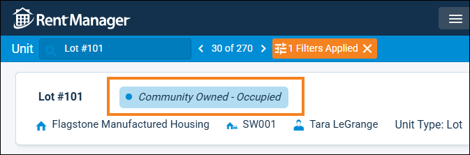

Source: https://rmxhelp.rentmanager.com/Topics/Express/Other/Scripts/Function-Site-Classification.htm
Site Classification Function (Script)
This function can be used with the Unit class to display a unit's current site classification, or the site classification as of a certain date. Site classifications are determined by the site's legal owner, whether the site can be rented, the occupancy status, and the type of asset(s) and/or resident-owned RV present at that site.
This script returns data only from units associated with properties that have a Property Type of Manufactured Housing. The unit's site classification can be found on the unit's details page on the scoreboard.

| Class | Syntax |
|---|---|
|
[Class().Unit.SiteClassification()] Displays the site classification assigned to the unit, as shown on the unit's details page. |
Parameters
Parameters change what the function examines and/or how it displays results. The parameters available to this function are indicated below and must be specified in the order listed in the following syntax. Required parameters must be assigned values for the function to work. For Optional parameters, if no value is provided in the script, Rent Manager uses default values.
[SiteClassification("AsOfDate","Format","Index")]
AsOfDate
Specify the as of date to use when examining site classifications. If no date is specified, the function uses the current date.
[SiteClassification("1/5/2026")]
Displays the site classification that applied to the unit on January 5, 2026.
Format
List details of the site classification using a special format sequence.
Use \t to insert a tab.
Use \n to insert a new line.
Default Format
If no custom format is specified, Rent Manager's default formatting displays only the site classification name.
"$_Name"
Variables
The following variables can be used in the Format parameter:
| Variable | Description |
|---|---|
|
$_Duration |
Displays the number of days the unit has spent in this site classification. |
|
$_FromDate |
Displays the date this unit was first associated with this site classification. |
|
$_Name |
Displays the name of the site classification, as shown on the unit's details page. |
|
$_ToDate |
Displays the last date this unit was still associated with the site classification before it changed. If there are no future classifications, this output displays blank. |
[SiteClassification("","$_Name\t$_Duration")]
Displays a new line with a customized output that shows the current site classification's name and how long it's been assigned to that classification.
Index
Select the site classification to examine. The classification the unit was most recently assigned to has an index value of 0, the second most recent classification has an index value of 1, and so on. If no Index parameter is specified, the index defaults to 0.
Warning
A custom format must be specified in the Format parameter for indexed site classification information to display. Additionally, if a value is entered for the AsOfDate parameter, the Index parameter is not examined.
[SiteClassification("","$_Name\t$_ToDate",1)]
Displays the second most recent site classification that applied to the unit and the date that the classification changed.
Script Examples
The following scripts show various ways the function can be used:
[Unit.SiteClassification("5/10/2026")]
Displays the unit's assigned site classification as of May 10, 2026.
[Tenant().Lease(1).Unit.SiteClassification()]
Displays the current site classification for the unit associated with the tenant's first additional lease.
[Unit.SiteClassification("","$_Name\t$_ToDate",2)]
Displays the third most recent site classification that applied to the unit, the date the classification first applied, and the date that the classification changed.
Vacant Lot 1/31/2026
[Unit.SiteClassification("","$_Name\t$_FromDate\t$_Duration")]
Displays a customized output that shows the site classification's name, the day the current classification first applied, and how long the unit has been assigned to that classification.
Community Owned - Occupied 7/11/2026 112